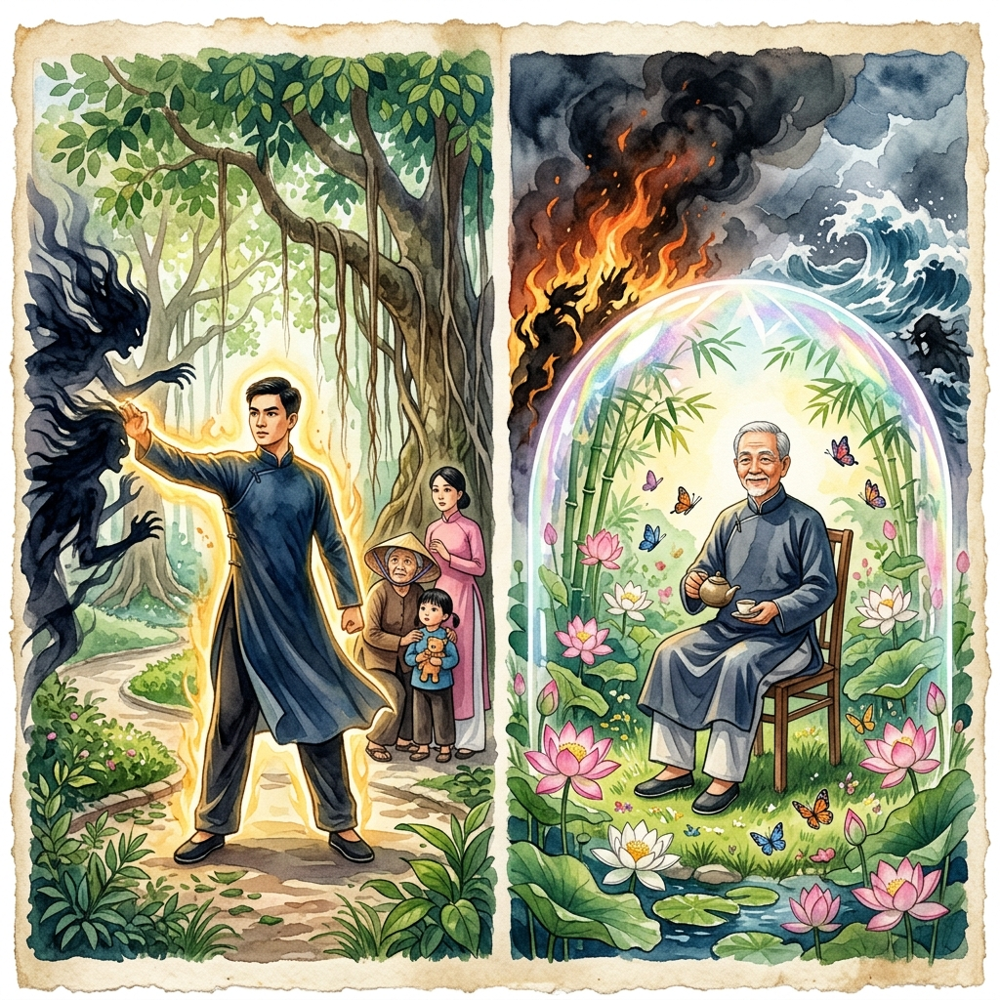
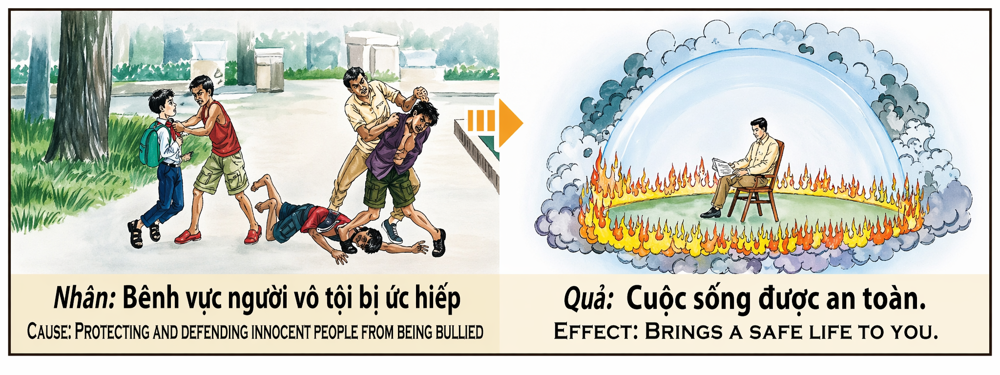

El Escudo InvisibleThe Invisible ShieldLo Scudo Invisibile无形的盾الدرع الخفيНевидимый щитDer Unsichtbare SchildLe Bouclier Invisible見えない盾O Escudo InvisívelLá Chắn Vô Hình
Quien se interpone entre el agresor y el inocente — quien pone su cuerpo, su voz o su presencia como barrera entre la injusticia y la víctima — está tejiendo, sin saberlo, la armadura más poderosa que el karma puede otorgar: un escudo invisible que le protegerá de todo mal. Porque cada vez que defiendes a alguien que no puede defenderse solo, el universo toma nota y deposita una capa más de protección sobre tu vida. Whoever stands between the aggressor and the innocent — whoever places their body, their voice, or their presence as a barrier between injustice and the victim — is weaving, unknowingly, the most powerful armor karma can bestow: an invisible shield that will protect them from all harm. For every time you defend someone who cannot defend themselves, the universe takes note and deposits another layer of protection over your life. Chi si interpone tra l'aggressore e l'innocente sta tessendo, senza saperlo, l'armatura più potente che il karma possa concedere: uno scudo invisibile che lo proteggerà da ogni male. Perché ogni volta che difendi qualcuno che non può difendersi da solo, l'universo deposita un altro strato di protezione sulla tua vita. 挡在施暴者和无辜者之间的人——将自己的身体、声音或存在作为不公和受害者之间屏障的人——正在不知不觉中编织业力能赐予的最强大的铠甲：一面无形的盾牌，将保护他免受一切伤害。因为你每一次保护无法自保的人，宇宙都会记录下来，在你的生命上多沉淀一层保护。 من يقف بين المعتدي والبريء — من يضع جسده أو صوته حاجزاً بين الظلم والضحية — ينسج دون أن يدري أقوى درع يمكن للكارما أن تمنحه: درع خفي يحميه من كل سوء. Кто встаёт между обидчиком и невинным — кто ставит своё тело, голос или присутствие барьером между несправедливостью и жертвой — ткёт, сам того не зная, самый мощный доспех, который карма может даровать: невидимый щит, защищающий от всякого зла. Wer sich zwischen den Angreifer und den Unschuldigen stellt — wer Körper, Stimme oder Präsenz als Barriere zwischen Ungerechtigkeit und Opfer setzt — webt, ohne es zu wissen, die mächtigste Rüstung, die das Karma verleihen kann: einen unsichtbaren Schild, der vor allem Übel schützt. Celui qui s'interpose entre l'agresseur et l'innocent tisse, sans le savoir, l'armure la plus puissante que le karma puisse accorder : un bouclier invisible qui le protégera de tout mal. 加害者と無実の人の間に立つ者は、知らないうちにカルマが与えうる最も強力な鎧を織っています：あらゆる害から守る見えない盾です。 Quem se interpõe entre o agressor e o inocente está a tecer, sem saber, a armadura mais poderosa que o karma pode conceder: um escudo invisível que o protegerá de todo o mal. Kẻ đứng giữa kẻ hung hãn và người vô tội — kẻ dùng thân, giọng nói hay sự hiện diện làm rào cản giữa bất công và nạn nhân — đang dệt, mà chẳng hề hay biết, bộ giáp mạnh nhất mà nhân quả có thể ban: một lá chắn vô hình bảo vệ khỏi mọi tai ương.
Defender al inocente es, en la mecánica del karma, uno de los actos más luminosos que un ser humano puede realizar. Es luminoso porque va contra el instinto de autopreservación: el defensor no tiene nada que ganar y potencialmente todo que perder. El bravucón puede volverse contra él, el sistema puede ignorarle, los testigos pueden mirar hacia otro lado. Y sin embargo, el defensor se levanta. Pone su brazo, su cuerpo, su voz como barrera. No porque espere una recompensa, sino porque algo dentro de él — una brújula moral antigua, forjada quizá en vidas anteriores — le dice que apartarse sería traicionar lo más sagrado que lleva dentro.
El karma registra estos actos con una tinta especial: la tinta de la protección. Cada vez que proteges a alguien que no puede protegerse solo, el universo abre una cuenta a tu nombre en el banco de la seguridad. Y esa cuenta genera intereses compuestos. No significa que jamás te pasará nada malo — la vida es impredecible por naturaleza. Pero significa que, cuando el peligro llegue, encontrará una resistencia misteriosa. Un accidente que debería haber sido fatal y no lo fue. Una enfermedad que remite cuando los médicos habían perdido la esperanza. Un incendio que se detiene justo antes de llegar a tu puerta. El defensor del inocente camina por el mundo dentro de una burbuja de protección que él mismo tejió con cada acto de valentía. Y esa burbuja es el escudo del karma: transparente, invisible, pero más fuerte que cualquier muro de piedra.
Defending the innocent is, in karma's mechanics, one of the most luminous acts a human being can perform. It is luminous because it goes against the instinct of self-preservation: the defender has nothing to gain and potentially everything to lose. The bully may turn on them, the system may ignore them, witnesses may look away. Yet the defender rises. They place their arm, their body, their voice as a barrier. Not because they expect a reward, but because something inside — an ancient moral compass, perhaps forged in prior lives — tells them that stepping aside would betray the most sacred thing they carry within.
Karma records these acts with a special ink: the ink of protection. Every time you protect someone who cannot protect themselves, the universe opens an account in your name at the bank of safety. And that account earns compound interest. It doesn't mean nothing bad will ever happen — life is inherently unpredictable. But it means that when danger comes, it will find a mysterious resistance. An accident that should have been fatal and wasn't. An illness that recedes when doctors had lost hope. A fire that stops just before reaching your door. The defender of the innocent walks through the world inside a bubble of protection they themselves wove with each act of courage. And that bubble is karma's shield: transparent, invisible, but stronger than any stone wall.
Difendere l'innocente è uno degli atti più luminosi che un essere umano possa compiere. Va contro l'istinto di autoconservazione: il difensore non ha nulla da guadagnare e potenzialmente tutto da perdere. Eppure si alza. Mette il braccio, il corpo, la voce come barriera. Non per ricompensa, ma perché qualcosa dentro — una bussola morale antica — gli dice che tirarsi indietro sarebbe tradire la cosa più sacra che porta dentro.
Il karma registra questi atti con un inchiostro speciale: quello della protezione. Ogni volta che proteggi qualcuno che non può proteggersi da solo, l'universo deposita un altro strato di sicurezza sulla tua vita. Non significa che non ti succederà mai nulla di brutto. Ma significa che quando il pericolo arriverà, troverà una resistenza misteriosa. Il difensore dell'innocente cammina nel mondo dentro una bolla di protezione che ha tessuto lui stesso con ogni atto di coraggio.
保护无辜者是人类能做的最光明的行为之一。它之所以光明，是因为它违反了自我保护的本能：保护者没有什么可得到的，却可能失去一切。然而保护者站了起来。他把手臂、身体、声音当作屏障。不是因为期待回报，而是因为内心深处——一个也许在前世锻造的古老道德罗盘——告诉他，退缩就是背叛他内心最神圣的东西。
业力用一种特殊的墨水记录这些行为：保护之墨。每次你保护一个无法自保的人，宇宙就在安全银行以你的名义开设一个账户。那个账户会产生复利。这并不意味着你永远不会遭遇不幸。但当危险来临时，它会遇到一种神秘的抵抗力。无辜者的捍卫者在世间行走，身处一个自己用每一个勇敢行为编织的保护泡泡之中。那个泡泡就是业力的盾牌：透明、无形，但比任何石墙都坚固。
الدفاع عن البريء من أكثر الأفعال إشراقاً في ميكانيكية الكارما. إنه مشرق لأنه يعاكس غريزة حفظ الذات: المدافع لا ينتظر مكافأة بل شيء بداخله — بوصلة أخلاقية قديمة — يقول له إن التراجع خيانة لأقدس ما يحمله في نفسه.
تسجّل الكارما هذه الأفعال بحبر خاص: حبر الحماية. كل مرة تحمي فيها من لا يستطيع حماية نفسه يفتح الكون حساباً باسمك في بنك الأمان. لا يعني أن شيئاً سيئاً لن يحدث أبداً. لكن حين يأتي الخطر سيجد مقاومة غامضة. المدافع عن البريء يسير في العالم داخل فقاعة حماية نسجها بنفسه بكل فعل شجاعة. وتلك الفقاعة هي درع الكارما.
Защита невинного — один из самых светлых поступков в механике кармы. Он светел, потому что идёт вопреки инстинкту самосохранения: защитнику нечего выиграть и есть что потерять. Но он встаёт. Ставит руку, тело, голос как барьер. Не ради награды, а потому что нечто внутри — древний нравственный компас — говорит ему, что отступить значит предать самое святое.
Карма записывает эти поступки особыми чернилами — чернилами защиты. Каждый раз, когда вы защищаете того, кто не может защитить себя сам, вселенная открывает счёт на ваше имя в банке безопасности. Это не значит, что ничего плохого не случится. Но когда придёт опасность, она встретит таинственное сопротивление. Защитник невинных идёт по миру внутри пузыря защиты, сотканного им самим. Этот пузырь — щит кармы: прозрачный, невидимый, но прочнее любой каменной стены.
Den Unschuldigen zu verteidigen ist einer der leuchtendsten Akte in der Mechanik des Karmas. Er ist leuchtend, weil er dem Selbsterhaltungsinstinkt widerspricht: Der Verteidiger hat nichts zu gewinnen und möglicherweise alles zu verlieren. Dennoch steht er auf. Er stellt Arm, Körper und Stimme als Barriere auf. Nicht für eine Belohnung, sondern weil etwas in ihm — ein alter moralischer Kompass — ihm sagt, dass Zurückweichen Verrat am Heiligsten wäre.
Das Karma verzeichnet diese Taten mit besonderer Tinte: der Tinte des Schutzes. Jedes Mal, wenn du jemanden beschützt, der sich nicht selbst schützen kann, eröffnet das Universum ein Konto auf deinen Namen in der Bank der Sicherheit. Der Verteidiger des Unschuldigen wandert durch die Welt in einer Schutzblase, die er selbst mit jedem mutigen Akt gewebt hat. Diese Blase ist Karmas Schild: durchsichtig, unsichtbar, aber stärker als jede Steinmauer.
Défendre l'innocent est l'un des actes les plus lumineux dans la mécanique du karma. Il est lumineux parce qu'il va à l'encontre de l'instinct de conservation : le défenseur n'a rien à gagner et potentiellement tout à perdre. Pourtant il se lève. Il place son bras, son corps, sa voix comme barrière. Non pour une récompense, mais parce que quelque chose en lui — une boussole morale ancienne — lui dit que reculer serait trahir le plus sacré qu'il porte en lui.
Le karma enregistre ces actes avec une encre spéciale : l'encre de la protection. Chaque fois que vous protégez quelqu'un qui ne peut se protéger seul, l'univers ouvre un compte à votre nom dans la banque de la sécurité. Le défenseur de l'innocent marche dans le monde à l'intérieur d'une bulle de protection qu'il a tissée lui-même. Cette bulle est le bouclier du karma : transparent, invisible, mais plus solide que n'importe quel mur de pierre.
無実の人を守ることは、カルマの仕組みにおいて最も輝かしい行為の一つです。自己保存の本能に逆らうからこそ輝かしいのです：守る者には得るものはなく、失うものは多い。それでも立ち上がります。腕を、体を、声を壁にします。報酬のためではなく、内なる何か——おそらく前世で鍛えられた古い道徳の羅針盤——が、退くことは内に宿る最も神聖なものへの裏切りだと告げるからです。
カルマはこれらの行為を特別なインク——保護のインク——で記録します。自分を守れない人を守るたびに、宇宙は安全銀行にあなた名義の口座を開きます。無実の人の守護者は、自らの勇敢な行為で織り上げた保護の泡の中を歩みます。その泡こそカルマの盾：透明で、見えないけれど、どんな石壁より強いのです。
Defender o inocente é um dos atos mais luminosos na mecânica do karma. É luminoso porque vai contra o instinto de autopreservação: o defensor nada tem a ganhar e tudo pode perder. Mesmo assim, levanta-se. Coloca o braço, o corpo, a voz como barreira. Não por recompensa, mas porque algo dentro — uma bússola moral antiga — lhe diz que recuar seria trair o mais sagrado que carrega.
O karma regista estes atos com uma tinta especial: a tinta da proteção. Cada vez que proteges alguém que não se pode proteger sozinho, o universo abre uma conta em teu nome no banco da segurança. O defensor do inocente caminha pelo mundo dentro de uma bolha de proteção que ele mesmo teceu. Essa bolha é o escudo do karma: transparente, invisível, mas mais forte do que qualquer muro de pedra.
Bảo vệ người vô tội là một trong những hành động sáng suốt nhất trong cơ chế nhân quả. Sáng suốt vì nó đi ngược bản năng tự bảo toàn: người bảo vệ chẳng được gì và có thể mất tất cả. Vậy mà vẫn đứng lên. Đặt cánh tay, thân mình, giọng nói làm rào cản. Không vì phần thưởng, mà vì điều gì đó bên trong — chiếc la bàn đạo đức cổ xưa — nói rằng lùi bước là phản bội điều thiêng liêng nhất mình mang.
Nhân quả ghi chép những hành động này bằng mực đặc biệt: mực bảo hộ. Mỗi lần bạn bảo vệ ai không thể tự bảo vệ, vũ trụ mở thêm một tài khoản mang tên bạn ở ngân hàng an toàn. Người bảo vệ kẻ vô tội bước đi trong đời trong bong bóng bảo hộ mà chính mình đã dệt bằng mỗi hành động dũng cảm. Bong bóng ấy là lá chắn nhân quả: trong suốt, vô hình, nhưng vững hơn mọi bức tường đá.
El Hombre que Se Puso Delante
The Man Who Stood in Front
L'Uomo che Si Mise Davanti
挡在前面的人
الرجل الذي وقف أمامهم
Человек, вставший впереди
Der Mann, der sich davorstellte
L'Homme qui Se Mit Devant
前に立った男
O Homem que Se Pôs à Frente
Người Đứng Chắn Phía Trước
En un barrio de Nha Trang creció un hombre silencioso llamado Phúc. No era grande ni fuerte, no era rico ni influyente. Era cartero. Repartía cartas por las calles del barrio seis días a la semana, saludaba a todos por su nombre y nunca se metía en asuntos ajenos. Pero Phúc tenía una línea que no cruzaba nadie en su presencia: la del abuso. Cuando veía a alguien maltratar a otro — especialmente a alguien más débil — algo cambiaba en su mirada. Los ojos del cartero tranquilo se convertían en los ojos de un muro.
La primera vez fue con un niño del barrio. Se llamaba Tuấn y tenía ocho años. Un grupo de chicos mayores lo acorralaba cada tarde a la salida de la escuela, le quitaban la mochila, le tiraban los cuadernos al barro y le hacían llorar. Los vecinos miraban desde las ventanas. Los profesores llegaban siempre tarde. Un día, Phúc pasó con su bolsa de cartas, vio la escena y se paró. No gritó. No amenazó. Simplemente caminó hasta donde estaba Tuấn, se puso delante de él con los brazos cruzados y miró a los acosadores directo a los ojos. "Esto se ha acabado", dijo con una voz que sonaba como si viniera del fondo de la tierra. Los chicos, que nunca habían visto al cartero enfadado, retrocedieron. Y desde ese día, no volvieron a tocar a Tuấn.
La segunda vez fue con la señora Hoa, una viuda de setenta años cuyo hijo alcohólico le pegaba cuando quería dinero para beber. Los vecinos oían los gritos, cerraban las ventanas y subían el volumen de la televisión. Phúc, que dejaba cartas en esa puerta cada mañana, un día escuchó un golpe seguido de un llanto. Se quitó la gorra, dejó la bolsa en el suelo y golpeó la puerta tres veces. Cuando el hijo abrió, borracho y furioso, Phúc entró, cogió a la señora Hoa del brazo con suavidad y la llevó a casa de una vecina. Luego volvió, miró al hijo y le dijo sin levantar la voz: "Si vuelves a tocarla, no vendré yo solo. Vendré con toda la calle." Y la calle, avergonzada por la valentía de un cartero, al fin se unió.
Phúc vivió hasta los noventa y dos años. Y durante esas nueve décadas, le pasaron cosas que los vecinos solo podían explicar como milagros. En la gran inundación de 2006, el agua arrasó tres manzanas enteras — pero la casa de Phúc, que estaba en la primera fila, quedó intacta, como si la corriente la hubiera rodeado. En 2015, un camión sin frenos bajó por la pendiente de su calle a toda velocidad; Phúc cruzaba en ese momento con su bicicleta. El camión se desvió inexplicablemente dos metros a la derecha y se empotró contra un muro vacío. Phúc ni siquiera cayó de la bicicleta. Los vecinos lo llamaban "el hombre burbuja" porque el peligro nunca le tocaba.
Cuando murió, rodeado de Tuấn — que ahora era profesor — y de la señora Hoa — que había vivido hasta los noventa y tres gracias a que alguien un día se puso delante —, el sacerdote del barrio dijo algo que el pueblo entero repitió durante generaciones: "Phúc nunca tuvo dinero, ni títulos, ni poder. Pero tuvo algo que el dinero no puede comprar: un escudo invisible. Lo tejió con cada acto de valentía silenciosa, con cada vez que se puso delante de un inocente y dijo: 'Mientras yo esté aquí, a esta persona no le pasa nada.' Y el karma le devolvió exactamente eso: que mientras él estuvo aquí, a él no le pasó nada." Porque eso es lo que hace el karma con quien protege a los demás: lo protege a él. No con muros, ni con guardias, ni con alarmas. Lo protege con algo más fuerte: con la misma fuerza invisible que le nació del pecho cada vez que defendió a alguien que no podía defenderse solo.
In a neighborhood of Nha Trang there grew a quiet man named Phúc. He was neither big nor strong, neither rich nor powerful. He was a postman. He delivered letters through the neighborhood streets six days a week, greeted everyone by name, and never meddled in others' affairs. But Phúc had one line nobody crossed in his presence: the line of abuse. When he saw someone mistreating another — especially someone weaker — something changed in his gaze. The quiet postman's eyes became the eyes of a wall.
The first time was with a neighborhood boy called Tuấn, eight years old. A group of older boys cornered him every afternoon after school, stole his backpack, threw his notebooks in the mud, and made him cry. Neighbors watched from windows. Teachers always arrived late. One day, Phúc passed with his bag of letters, saw the scene, and stopped. He didn't shout. He didn't threaten. He simply walked to where Tuấn was, stood in front of him with arms crossed, and looked the bullies straight in the eyes. "This is over," he said, his voice sounding as if it came from the depths of the earth. The boys, who had never seen the postman angry, stepped back. From that day, they never touched Tuấn again.
The second time was with Mrs. Hoa, a seventy-year-old widow whose alcoholic son hit her whenever he wanted money for drink. Neighbors heard the screams, closed their windows, and turned up the television. Phúc, who left letters at that door every morning, one day heard a blow followed by a cry. He took off his cap, set down his bag, and knocked three times. When the son opened, drunk and furious, Phúc walked in, gently took Mrs. Hoa by the arm, and led her to a neighbor's house. Then he returned, looked at the son and said without raising his voice: "If you touch her again, I won't come alone. I'll come with the whole street." And the street, ashamed by a postman's courage, finally united.
Phúc lived to ninety-two. And during those nine decades, things happened to him that neighbors could only explain as miracles. In the great flood of 2006, water swept away three entire blocks — but Phúc's house, in the front row, stood untouched, as if the current had flowed around it. In 2015, a brakeless truck barreled down his street at full speed; Phúc was crossing on his bicycle at that moment. The truck inexplicably swerved two meters to the right and crashed into an empty wall. Phúc didn't even fall off his bicycle. Neighbors called him "the bubble man" because danger never touched him.
When he died, surrounded by Tuấn — now a teacher — and Mrs. Hoa — who had lived to ninety-three because someone once stood in front — the neighborhood priest said something the entire town repeated for generations: "Phúc never had money, titles, or power. But he had something money cannot buy: an invisible shield. He wove it with each act of quiet courage, each time he stood before an innocent person and said: 'While I'm here, nothing happens to this person.' And karma returned exactly that: while he was here, nothing happened to him." Because that is what karma does for whoever protects others: it protects them. Not with walls, not with guards, not with alarms. It protects with something stronger: with the same invisible force that was born from their chest every time they defended someone who couldn't defend themselves.
In un quartiere di Nha Trang crebbe un uomo silenzioso di nome Phúc. Non era grande né forte, né ricco né potente. Era postino. Ma aveva una linea che nessuno oltrepassava in sua presenza: quella dell'abuso. Quando vedeva qualcuno maltrattare un altro, i suoi occhi tranquilli diventavano gli occhi di un muro.
La prima volta fu con un bambino del quartiere, Tuấn, otto anni. Un gruppo di ragazzi più grandi lo tormentava ogni pomeriggio. Un giorno Phúc passò, vide la scena, si fermò. Camminò fino a Tuấn, si mise davanti a lui con le braccia incrociate e guardò i bulli negli occhi. "Questo è finito", disse con una voce che sembrava venire dal centro della terra. Da quel giorno non toccarono più Tuấn.
La seconda volta fu con la signora Hoa, una vedova il cui figlio alcolizzato la picchiava. Phúc un giorno sentì un colpo seguito da un pianto. Entrò, prese la signora Hoa per il braccio e la portò dalla vicina. Poi tornò e disse al figlio: "Se la tocchi ancora, non verrò solo. Verrò con tutta la strada." E la strada, vergognosa del coraggio di un postino, finalmente si unì.
Phúc visse fino a novantadue anni. L'alluvione del 2006 spazzò tre isolati, ma la sua casa rimase intatta. Un camion senza freni deviò inspiegabilmente prima di colpirlo. I vicini lo chiamavano "l'uomo bolla" perché il pericolo non lo sfiorava.
Quando morì, il prete del quartiere disse: "Phúc non ebbe mai denaro né potere. Ma ebbe qualcosa che il denaro non compra: uno scudo invisibile. Lo tessè con ogni atto di coraggio silenzioso. E il karma gli restituì esattamente questo: finché lui fu qui, a lui non successe nulla." Perché il karma protegge chi protegge gli altri. Non con muri, ma con la stessa forza invisibile che gli nacque dal petto ogni volta che difese chi non poteva difendersi da solo.
在芽庄的一个街区长大了一个沉默的男人，名叫福。他既不高大也不强壮，既不富有也没有权势。他是邮递员。但福有一条线，在他面前没人能越过：欺凌的线。当他看到有人欺负弱者时，安静邮递员的眼神就变成了一堵墙的眼神。
第一次是街区一个叫俊的八岁男孩。一群大孩子每天放学后围堵他。一天，福拎着邮包路过，看到这一幕，停了下来。他走到俊面前，交叉双臂站在他前面，直视那些欺凌者的眼睛。"结束了，"他说，声音仿佛来自大地深处。从那天起，他们再没碰过俊。
第二次是花婶，一个七十岁的寡妇，酗酒的儿子打她要酒钱。福有天听到一声重击和哭声。他走进去，轻轻拉着花婶到邻居家。然后回来对儿子说："你再碰她，我不会一个人来。我会带上整条街。"于是整条街，为一个邮递员的勇气而羞愧，终于团结了起来。
福活到了九十二岁。在那九十年里，发生在他身上的事只能用奇迹来解释。2006年大洪水冲毁了三个街区——但福的房子纹丝不动，仿佛水流绕道而行。2015年一辆刹车失灵的卡车冲下他的街道，福正骑自行车过马路。卡车莫名其妙向右偏了两米撞上空墙。福连车都没倒。邻居叫他"泡泡人"，因为危险从不碰他。
他去世时，身边围着俊——现在是教师——和花婶——因为有人曾挡在前面而活到了九十三岁。街区的神父说了一句整个镇子传诵了好几代的话："福从没有钱、头衔、权力。但他拥有钱买不到的东西：一面无形的盾。他用每一次无声的勇敢织成。业力回报他的正是这个：只要他在，他就平安无事。"因为业力对保护别人的人做的就是：保护他。不是用墙，不是用警卫，不是用警报。而是用那种更强大的东西：每次他保护无法自保的人时从胸膛中涌出的那股无形的力量。
في حي من أحياء نها ترانغ نشأ رجل هادئ اسمه فوك. لم يكن ضخماً ولا قوياً ولا غنياً. كان ساعي بريد. لكنه كان يملك خطاً لا يتجاوزه أحد في حضوره: خط الاعتداء. حين يرى شخصاً يعتدي على آخر ضعيف كانت عيناه تتحول إلى عيني جدار.
المرة الأولى كانت مع صبي اسمه توان عمره ثماني سنوات. مجموعة أكبر سناً تتنمر عليه يومياً. مرّ فوك ذات يوم ووقف أمام توان ذراعاه متشابكتان ونظر إلى المتنمرين في أعينهم: "انتهى الأمر." من ذلك اليوم لم يمسّوا توان.
المرة الثانية مع السيدة هوا أرملة السبعين التي كان ابنها السِّكير يضربها. سمع فوك صفعة تلاها بكاء. دخل وأخذ السيدة هوا بلطف إلى جارتها. ثم عاد وقال للابن بلا رفع صوت: "إذا لمستها مجدداً لن آتي وحدي. سآتي بالشارع كله." وانضم الشارع أخيراً خجلاً من شجاعة ساعي بريد.
عاش فوك حتى الثانية والتسعين. الفيضان الكبير عام 2006 جرف ثلاثة أحياء لكن بيته بقي سليماً كأن التيار التفّ حوله. شاحنة بلا مكابح انحرفت بشكل غامض مترين قبل أن تصدمه. سمّاه الجيران "رجل الفقاعة" لأن الخطر لم يلمسه قط.
حين مات قال كاهن الحي كلمة ردّدها الناس أجيالاً: "فوك لم يملك مالاً ولا لقباً. لكنه ملك شيئاً لا يُشترى: درعاً خفياً. نسجه بكل فعل شجاعة صامتة. والكارما أعادت له بالضبط: طوال وجوده هنا لم يمسّه شيء." لأن الكارما تحمي من يحمي الآخرين بنفس القوة الخفية التي وُلدت من صدره كلما دافع عمّن لا يستطيع الدفاع عن نفسه.
В одном квартале Нячанга вырос тихий человек по имени Фук. Не большой, не сильный, не богатый. Почтальон. Но у Фука была черта, которую никто не переступал в его присутствии: черта насилия. Когда он видел, что кто-то обижает слабого, глаза спокойного почтальона превращались в глаза стены.
Первый раз — мальчик Туан, восемь лет. Старшие каждый день его травили. Фук увидел, остановился, встал перед Туаном, скрестил руки и посмотрел обидчикам в глаза: «Это кончилось.» С того дня Туана не трогали.
Второй раз — госпожа Хоа, семидесятилетняя вдова, которую бил сын-алкоголик. Фук услышал удар и плач. Вошёл, бережно взял госпожу Хоа за руку и отвёл к соседке. Потом вернулся и сказал сыну тихо: «Ещё раз тронешь — приду не один. Приду со всей улицей.» И улица, устыдившись храбрости почтальона, наконец объединилась.
Фук прожил девяносто два года. Великое наводнение 2006 года смыло три квартала — но его дом остался нетронутым, словно поток обтёк его. Грузовик без тормозов необъяснимо свернул на два метра и врезался в пустую стену. Соседи звали его «человек-пузырь», потому что опасность его не касалась.
Когда он умер, квартальный священник сказал слова, которые повторяли поколениями: «У Фука не было ни денег, ни титулов, ни власти. Но было то, что нельзя купить: невидимый щит. Он сплёл его каждым актом тихой храбрости. И карма вернула ему ровно это: пока он был здесь, с ним ничего не случилось.» Потому что карма защищает того, кто защищает других — той же невидимой силой, что рождалась у него в груди каждый раз, когда он вставал за того, кто не мог защитить себя сам.
In einem Viertel von Nha Trang wuchs ein stiller Mann namens Phúc auf. Nicht groß, nicht stark, nicht reich. Briefträger. Aber er hatte eine Grenze, die niemand in seiner Gegenwart überschritt: die der Gewalt. Wenn er sah, wie jemand einen Schwächeren quälte, wurden die Augen des ruhigen Briefträgers zu den Augen einer Mauer.
Das erste Mal: Tuấn, acht Jahre alt, täglich von Älteren schikaniert. Phúc sah es, blieb stehen, stellte sich vor Tuấn, verschränkte die Arme und sah den Mobbern in die Augen: „Das ist vorbei." Von da an rührten sie Tuấn nie wieder an.
Das zweite Mal: Frau Hoa, siebzigjährige Witwe, deren alkoholkranker Sohn sie schlug. Phúc hörte einen Schlag und Weinen. Er ging hinein, nahm Frau Hoa sanft am Arm und brachte sie zur Nachbarin. Dann kehrte er zurück und sagte leise zum Sohn: „Wenn du sie noch einmal anrührst, komme ich nicht allein. Ich komme mit der ganzen Straße." Und die Straße, beschämt durch den Mut eines Briefträgers, vereinte sich.
Phúc wurde zweiundneunzig. Die Flut 2006 riss drei Häuserblocks weg — sein Haus blieb unberührt. Ein Lastwagen ohne Bremsen wich unerklärlich zwei Meter aus. Die Nachbarn nannten ihn „den Blasenmann", weil Gefahr ihn nie berührte.
Als er starb, sagte der Gemeindepriester Worte, die Generationen wiederholten: „Phúc hatte nie Geld, Titel oder Macht. Aber er hatte etwas, das man nicht kaufen kann: einen unsichtbaren Schild. Er webte ihn mit jedem Akt stillen Mutes. Und das Karma gab ihm genau das zurück: Solange er hier war, geschah ihm nichts." Denn das Karma schützt den, der andere schützt — mit derselben unsichtbaren Kraft, die ihm jedes Mal aus der Brust entsprang, wenn er jemanden verteidigte, der sich nicht selbst verteidigen konnte.
Dans un quartier de Nha Trang grandit un homme silencieux nommé Phúc. Ni grand, ni fort, ni riche. Facteur. Mais il avait une ligne que personne ne franchissait en sa présence : celle de l'abus. Quand il voyait quelqu'un maltraiter un plus faible, les yeux du facteur tranquille devenaient ceux d'un mur.
La première fois : Tuấn, huit ans, harcelé chaque jour par des plus grands. Phúc s'arrêta, se plaça devant l'enfant, bras croisés, et regarda les harceleurs dans les yeux : « C'est fini. » Depuis ce jour, ils ne touchèrent plus Tuấn.
La deuxième fois : Mme Hoa, veuve de soixante-dix ans battue par son fils alcoolique. Phúc entendit un coup suivi d'un sanglot. Il entra, prit Mme Hoa doucement par le bras et la conduisit chez une voisine. Puis revint et dit au fils sans élever la voix : « Si tu la touches encore, je ne viendrai pas seul. Je viendrai avec toute la rue. » Et la rue, honteuse du courage d'un facteur, s'unit enfin.
Phúc vécut jusqu'à quatre-vingt-douze ans. L'inondation de 2006 emporta trois pâtés de maisons — sa demeure resta intacte. Un camion sans freins dévia inexplicablement de deux mètres. Les voisins l'appelaient « l'homme bulle » car le danger ne le touchait jamais.
À sa mort, le prêtre du quartier dit des mots répétés durant des générations : « Phúc n'eut jamais argent, titres ni pouvoir. Mais il eut ce que l'argent ne peut acheter : un bouclier invisible. Il le tissa avec chaque acte de courage silencieux. Et le karma lui rendit exactement cela : tant qu'il fut ici, rien ne lui arriva. » Car le karma protège qui protège les autres — avec la même force invisible née de sa poitrine chaque fois qu'il défendit quelqu'un qui ne pouvait se défendre seul.
ニャチャンの街区に、フックという物静かな男が育ちました。大きくも強くも裕福でもない。郵便配達員でした。しかしフックには、彼の前では誰も越えられない一線がありました：虐待の一線です。弱い者がいじめられているのを見ると、穏やかな郵便配達員の目は壁の目に変わりました。
最初は8歳の少年トゥアンでした。年上の集団に毎日いじめられていました。フックは見て立ち止まり、トゥアンの前に腕を組んで立ち、いじめっ子の目を真っ直ぐ見ました。「これで終わりだ。」その日からトゥアンに手を出す者はいませんでした。
二度目はホアさん、七十歳の未亡人で、アルコール依存症の息子に殴られていました。フックは打撃音と泣き声を聞きました。中に入り、優しくホアさんの腕を取って隣の家に連れて行きました。そして戻って息子に静かに言いました。「もう一度彼女に触れたら、一人では来ない。通り全体で来る。」そして、郵便配達員の勇気に恥じた通りが、ついに団結しました。
フックは92歳まで生きました。2006年の大洪水は3ブロックを押し流しましたが、フックの家は無傷でした。ブレーキの壊れたトラックは不可解にも2メートルそれて空壁に突っ込みました。近所では「泡人間」と呼ばれていました。危険が触れなかったからです。
亡くなった時、近所の司祭は何世代も繰り返される言葉を言いました。「フックにはお金も肩書きも権力もなかった。しかし、お金では買えないものを持っていた：見えない盾だ。静かな勇気の一つ一つで織り上げた。カルマは正確にそれを返した：彼がここにいる間、彼には何も起きなかった。」カルマは他者を守る者を守るのです——自分を守れない人を守るたびに胸から湧き出た、あの同じ見えない力で。
Num bairro de Nha Trang cresceu um homem silencioso chamado Phúc. Nem grande, nem forte, nem rico. Carteiro. Mas tinha uma linha que ninguém ultrapassava na sua presença: a do abuso. Quando via alguém maltratar um mais fraco, os olhos do carteiro tranquilo tornavam-se os olhos de uma muralha.
A primeira vez: Tuấn, oito anos, intimidado todos os dias. Phúc parou, pôs-se à frente dele de braços cruzados e olhou os agressores nos olhos: "Acabou-se." Nunca mais tocaram em Tuấn.
A segunda vez: D. Hoa, viúva de setenta anos espancada pelo filho alcoólico. Phúc ouviu uma pancada e um choro. Entrou, pegou-lhe no braço com suavidade e levou-a à vizinha. Voltou e disse ao filho sem levantar a voz: "Se lhe tocares outra vez, não venho sozinho. Venho com a rua toda." E a rua, envergonhada pela coragem de um carteiro, uniu-se.
Phúc viveu até aos noventa e dois. A cheia de 2006 levou três quarteirões — a casa dele ficou intacta. Um camião sem travões desviou-se inexplicavelmente dois metros. Chamavam-lhe "o homem bolha" porque o perigo nunca o tocava.
Quando morreu, o padre do bairro disse palavras repetidas durante gerações: "Phúc nunca teve dinheiro, títulos ou poder. Mas teve o que o dinheiro não compra: um escudo invisível. Teceu-o com cada ato de coragem silenciosa. E o karma devolveu-lhe exatamente isso: enquanto ele esteve aqui, nada lhe aconteceu." Porque o karma protege quem protege os outros — com a mesma força invisível que lhe nasceu do peito cada vez que defendeu quem não se podia defender sozinho.
Ở một khu phố Nha Trang lớn lên một người đàn ông trầm lặng tên Phúc. Không to, không khoẻ, không giàu. Anh là người đưa thư. Nhưng Phúc có một ranh giới không ai được vượt khi có anh: ranh giới bạo lực. Khi thấy ai bắt nạt người yếu, đôi mắt hiền lành của người đưa thư biến thành đôi mắt của bức tường.
Lần đầu tiên là cậu bé Tuấn, tám tuổi, bị đám lớn bắt nạt mỗi chiều. Phúc đi ngang, thấy, dừng lại. Bước tới chỗ Tuấn, khoanh tay đứng chắn phía trước, nhìn thẳng vào mắt đám trẻ: "Hết rồi." Giọng anh nghe như từ lòng đất vọng lên. Từ đó chúng không bao giờ đụng Tuấn nữa.
Lần thứ hai là bà Hoa, bà goá bảy mươi tuổi bị con trai nghiện rượu đánh. Phúc nghe tiếng đánh rồi tiếng khóc. Anh bước vào, nhẹ nhàng dắt bà Hoa sang nhà hàng xóm. Rồi quay lại nói với người con trai không to tiếng: "Anh mà đụng bà thêm lần nữa, tôi không đến một mình. Tôi đến với cả con phố." Và con phố, xấu hổ vì sự dũng cảm của một người đưa thư, cuối cùng đoàn kết.
Phúc sống đến chín mươi hai tuổi. Trận lũ lớn 2006 cuốn trôi ba dãy nhà — nhà Phúc vẫn nguyên vẹn như dòng nước vòng qua. Xe tải mất phanh bẻ lái bí ẩn hai mét trước khi tông phải anh. Hàng xóm gọi anh là "người bong bóng" vì hiểm nguy chẳng bao giờ chạm tới.
Khi anh mất, cha xứ nói câu mà cả phố truyền nhiều đời: "Phúc chưa bao giờ có tiền, danh hay quyền. Nhưng anh có thứ tiền không mua được: lá chắn vô hình. Anh dệt nó bằng mỗi hành động dũng cảm thầm lặng. Và nhân quả trả lại anh đúng điều đó: suốt đời anh ở đây, chẳng gì xảy ra với anh." Vì nhân quả bảo vệ ai bảo vệ người khác — bằng chính sức mạnh vô hình sinh ra từ lồng ngực mỗi khi anh đứng chắn cho kẻ không thể tự bảo vệ mình.

La Inspiración Original
The Original Inspiration
Nguồn cảm hứng ban đầu
La historia que hemos relatado en este capítulo está inspirada por el pasaje de la escena original de los murales «Tranh Nhân Quả» (Ilustraciones del Karma) del Templo Linh Ung en Da Nang.
The story we have told in this chapter is inspired by the passage from the original scene of the "Tranh Nhân Quả" (Illustrations of Karma) murals of the Linh Ung Temple in Da Nang.

🇻🇳 Tiếng Việt:
Nhân: Bênh vực người vô tội bị ức hiếp.
Quả: Cuộc sống được an toàn.
🇬🇧 English:
Cause: Protecting and defending innocent people from being bullied.
Effect: Brings a safe life to you.
Traducción Recreada:
Causa: Proteger y defender a personas inocentes del acoso y la opresión.
Efecto: Recibir una vida segura, protegida de todo peligro.
Recreated Translation:
Cause: Protecting and defending innocent people from bullying and oppression.
Effect: Receiving a safe life, protected from all danger.
Traduzione ricreata:
Causa: Proteggere e difendere persone innocenti dal bullismo e dall'oppressione.
Effetto: Ricevere una vita sicura, protetta da ogni pericolo.
重新创建的翻译:
原因：保护和捍卫遭受欺凌的无辜者。
影响：获得一个安全的生活，受到保护免于一切危险。
الترجمة المعاد صياغتها:
السبب: حماية الأبرياء من التنمر والقمع.
الأثر: حياة آمنة محمية من كل خطر.
Воссозданный перевод:
Причина: Защита невинных от травли и притеснения.
Следствие: Безопасная жизнь, защищённая от всякой опасности.
Neu erstellte Übersetzung:
Ursache: Unschuldige vor Mobbing und Unterdrückung schützen und verteidigen.
Wirkung: Ein sicheres Leben erhalten, vor aller Gefahr geschützt.
Traduction recréée:
Cause : Protéger et défendre les innocents contre le harcèlement et l'oppression.
Effet : Recevoir une vie sûre, protégée de tout danger.
再作成された翻訳:
原因：いじめや抑圧から無実の人を守り擁護する。
影響：すべての危険から守られた安全な人生を受け取る。
Tradução recriada:
Causa: Proteger e defender pessoas inocentes do assédio e da opressão.
Efeito: Receber uma vida segura, protegida de todo o perigo.